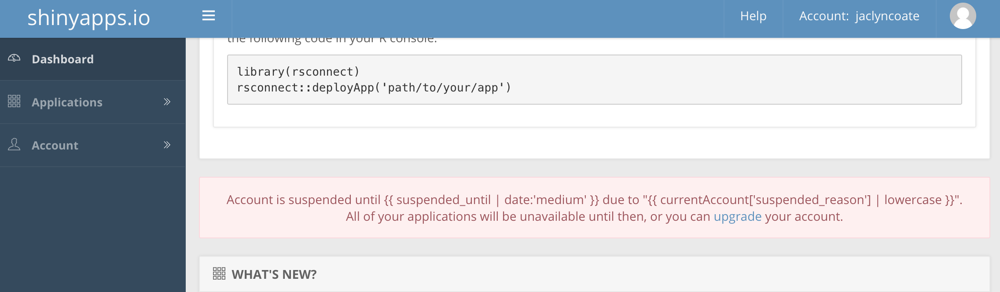

This was extremely challenging and I did the best I could. Enjoy the laugh ;-) FYI: My shinyapps.io account was suspended and I was not able to upload this app. See screenshot below. 
ui <- fluidPage(
titlePanel("Selection Options"),
# Sidebar layout with input and output definitions ----
sidebarLayout(
# Sidebar panel for inputs ----
sidebarPanel(
# Load Data
actionButton("load", "Load Beer Data"),
#Input: Slider for the number of bins ----
sliderInput(inputId = "bins",
label = "Number of bins:",
min = 1,
max = 50,
value = 30),
#Copy the line below to make a select box
selectInput("select", label = h3("ABV or IBU"),
choices = list("ABV" = "ABV", "IBU" = "IBU"),
selected = 1),
hr(),
fluidRow(column(3, verbatimTextOutput("value"))),
selectInput("plot.type","Plot Type:",
list(boxplot = "boxplot", histogram = "histogram")
),
# Select Graph Type
radioButtons("dist", "Plot Type:",
c("Boxplot" = "Boxplot",
"Histogram" = "Histogram",
"Scatter Plot" = "Scatter Plot"
)),
# Select whether to overlay smooth trend line
checkboxInput(inputId = "smoother", label = strong("Overlay smooth trend line"), value = FALSE),
# Display only if the smoother is checked
conditionalPanel(condition = "input.smoother == true",
sliderInput(inputId = "f", label = "Smoother span:",
min = 0.01, max = 1, value = 0.67, step = 0.01,
animate = animationOptions(interval = 100)),
HTML("Higher values give more smoothness.")
)
),
# Main panel for displaying outputs ----
mainPanel(
# Output: Histogram ----
plotOutput(outputId = "distPlot")
)
)
)
server <- function(input, output){
#beers <- observeEvent(input$load,{read.csv(inFile$`https://raw.githubusercontent.com/BivinSadler/MDS-6306-Doing-Data-Science-Fall-2019/master/Un#it%208%20and%209%20Case%20Study%201/Beers.csv`, header = input$header)})
output$caption<-renderText({
switch(input$plot.type,
"boxplot" = "Boxplot",
"histogram" = "Histogram")
})
#plotting function using ggplot2
output$p <- renderPlot({
plot.obj<-get_data()
#conditions for plotting
if(is.null(plot.obj)) return()
#make sure variable and group have loaded
if(plot.obj$variable == "" | plot.obj$group =="") return()
#plot types
plot.type<-switch(input$plot.type,
"boxplot" = geom_boxplot(),
"histogram" = geom_histogram(alpha=0.5,position="identity"),
"density" = geom_density(alpha=.75),
"bar" = geom_bar(position="dodge")
)
if(input$plot.type=="boxplot") { #control for 1D or 2D graphs
p<-ggplot(plot.obj$data,
aes_string(
x = plot.obj$group,
y = plot.obj$variable,
fill = plot.obj$group # let type determine plotting
)
) + plot.type
if(input$show.points==TRUE)
{
p<-p+ geom_point(color='black',alpha=0.5, position = 'jitter')
}
} else {
p<-ggplot(plot.obj$data,
aes_string(
x = plot.obj$variable,
fill = plot.obj$group,
group = plot.obj$group
#color = as.factor(plot.obj$group)
)
) + plot.type
}
p<-p+labs(
fill = input$group,
x = "",
y = input$variable
) +
.theme
print(p)
})
# Histogram of the Old Faithful Geyser Data ----
# with requested number of bins
# This expression that generates a histogram is wrapped in a call
# to renderPlot to indicate that:
#
# 1. It is "reactive" and therefore should be automatically
# re-executed when inputs (input$bins) change
# 2. Its output type is a plot
output$distPlot <- renderPlot({
if(input$select == "ABV")
{
x <- beers$ABV
bins <- seq(min(x), max(x), length.out = input$bins + 1)
hist(x, breaks = bins, col = "#75AADB", border = "white",
xlab = "ABV",
main = "Histogram of ABV")
}
if(input$select == "IBU")
{
x <- beers$IBU
bins <- seq(min(x), max(x), length.out = input$bins + 1)
hist(x, breaks = bins, col = "#75AADB", border = "white",
xlab = "IBU",
main = "Histogram of IBU")
}
})
# Create scatterplot object the plotOutput function is expecting
output$lineplot <- renderPlot({
color = "#434343"
par(mar = c(4, 4, 1, 1))
plot(x = selected_trends()$selected_trends(), y = selected_trends()$selected_trends(), type = "l",
xlab = "Date", ylab = "Trend index", col = color, fg = color, col.lab = color, col.axis = color)
# Display only if smoother is checked
if(input$smoother){
smooth_curve <- lowess(x = as.numeric(selected_trends()$selected_trends()), y = selected_trends()$selected_trends(), f = input$f)
lines(smooth_curve, col = "#E6553A", lwd = 3)
}
})
}
# Run the app ----
shinyApp(ui = ui, server = server)